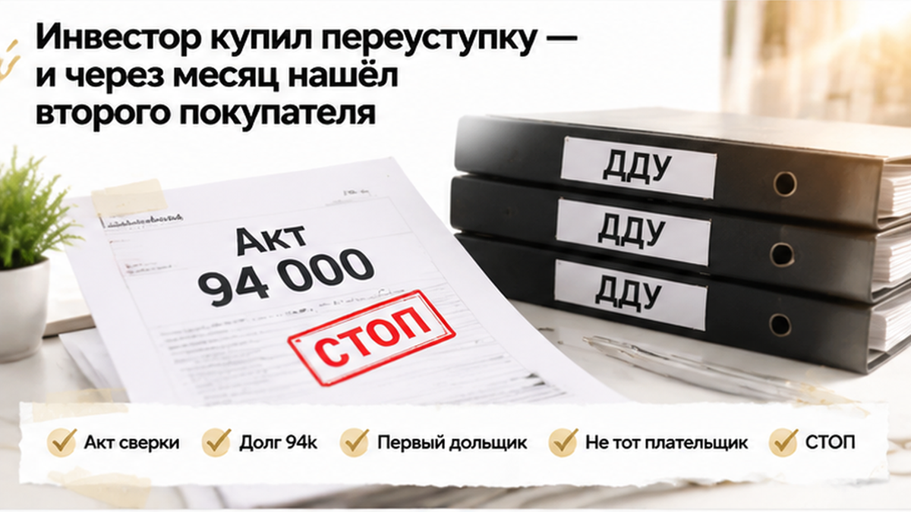
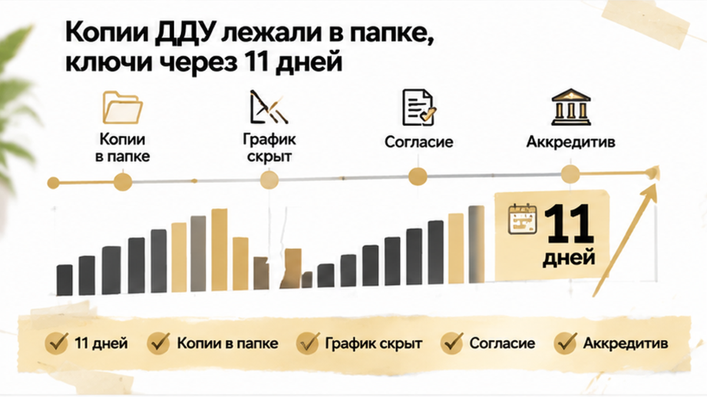
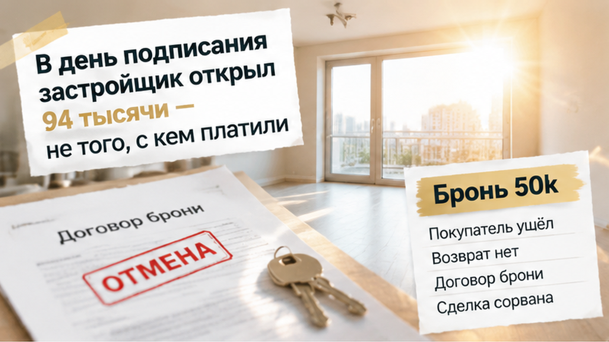
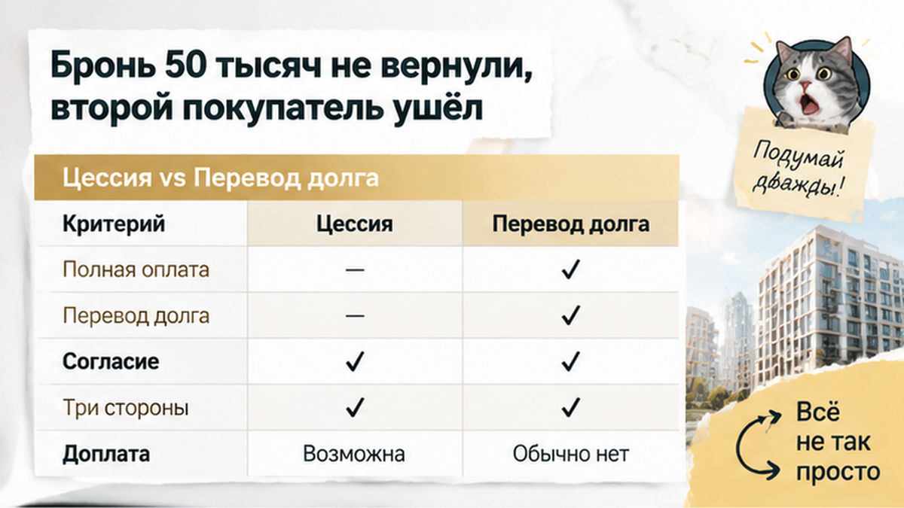
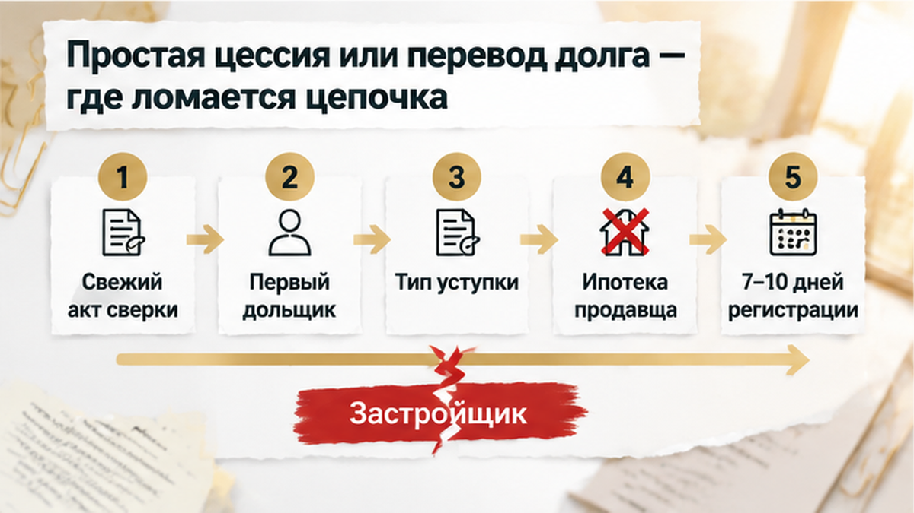

За 11 дней до выдачи ключей инвестор в Тюмени пришёл в офис застройщика с готовой переуступкой — и узнал о долге в 94 000 ₽ у первого дольщика в цепочке. Его покупатель уже внёс 50 000 ₽ за бронь, а сам инвестор полностью рассчитался со своим продавцом. Всё выглядело почти завершённым — «подпишем документы и дождёмся регистрации». Застройщик остановил переоформление: дом был почти готов, а в начале цепочки оставался чужой долг.
Я Святослав Шакин, The Риэлтор в Тюмени. В Telegram разбираю сделки по новостройкам, а в MAX можно задать вопрос по своей ситуации без длинных формальностей.
Сначала всё выглядело как обычная инвестиционная история — купить право на квартиру в строящейся новостройке и затем перепродать. Инвестор полностью рассчитался со своим продавцом, получил документы, а через месяц нашёл второго покупателя. Тот был готов забрать право по следующей переуступке. В такой момент легко выдохнуть: «Деньги переданы, договоры собраны, квартира почти готова». Однако исходный ДДУ с застройщиком никуда не исчезает — по нему по-прежнему нужно проверять участника, оплату и всё, что осталось выполнить.
Расчёт инвестора со своим продавцом подтверждает только одно — деньги между ними переданы. Он не доказывает, что первый дольщик полностью оплатил покупку застройщику. В цепочке могут различаться суммы и даты платежей, а неоплаченный остаток обнаруживается уже при переоформлении. Поэтому перед новой уступкой нужно пройти всю историю до исходного ДДУ — выяснить, кто указан в договоре с застройщиком и что оплачено сегодня. Папка с копиями сама по себе такого ответа не даёт.
В другой ситуации застройщик направлял участникам обновлённые документы после смены юридического лица. Это не просто «заменили реквизиты» — вопросы к новому ДДУ и эскроу нужно разбирать до подписания.

До выдачи ключей оставалось 11 дней — второй покупатель рассчитывал быстро оформить право на квартиру. В папке уже лежали копии исходного ДДУ, последующих переуступок, согласий и переписки. На первый взгляд всё сходилось: «Документы есть, продавец деньги получил, дом почти готов». Только копия договора показывает его текст, а не сегодняшнее состояние оплаты. Из неё не узнать, внесены ли все платежи, появилась ли просрочка, начислены ли пени и изменились ли условия переоформления. Это нужно уточнять у застройщика — по зарегистрированному ДДУ.
Сам договор тоже надо прочитать, даже если предыдущая переуступка прошла без заминок. Закон разрешает передать право после полной оплаты ДДУ либо вместе с долгом — новому участнику. При этом в договоре могут быть комиссия, требование письменного согласия застройщика или ограничение переуступки до ввода дома. Поэтому проверка не заканчивается словами «договоры собраны» — нужно выяснить, кто указан в исходном ДДУ и сколько денег действительно получил застройщик.
Если продавец покупал с ипотекой, добавляется согласие банка — нужно проверить, сняты ли ограничения и какие документы потребуются теперь. Близкая выдача ключей эти вопросы не отменяет, а времени на исправления оставляет меньше. До аванса разумно запросить у застройщика свежие сведения по участнику исходного ДДУ. При нескольких переуступках проверяют и нынешнего продавца, и первоначального дольщика — старые копии не должны превращаться в доказательство того, что «всё оплачено».
Переводить деньги напрямую из-за обещания «донесём согласие позже» тоже не стоит. В договоре заранее фиксируют, когда продавец получит доступ к деньгам на аккредитиве или эскроу. При переуступке таким событием обычно должна быть регистрация нового перехода права — не устное заверение в офисе.


В офисе застройщика уже готовились переоформлять документы — инвестор считал, что свою часть выполнил. Он рассчитался с продавцом, собрал копии договоров и согласий, привёл нового покупателя. Перед подписанием застройщик запросил акт сверки по зарегистрированному ДДУ — документ о том, сколько начислено и сколько оплачено. Там обнаружилось 94 000 ₽ просрочки, которой в папке инвестора не было. Должен был первый дольщик в цепочке — не тот человек, которому инвестор недавно передал деньги.
Для застройщика важны зарегистрированный договор и расчёты по нему — расписка между последними продавцом и покупателем этого не заменяет. Поэтому передать право как полностью оплаченное не получилось. Если остались основной долг, пени или штрафы, нужно отдельно оформлять, кто теперь будет платить, и получать письменное согласие застройщика. В этой сделке согласия не дали — решить вопрос одной распиской или просто подать документы на регистрацию стороны не могли. Переоформление остановили, а у инвестора остались право получить квартиру и долг с первого звена цепочки.

Второй покупатель уже внёс за бронь 50 000 ₽ — он рассчитывал оформить переуступку в срок, до выдачи ключей. После отказа застройщика ждать решения по чужому долгу покупатель не стал и вышел из сделки. Здесь легко сказать: «Раз оформление остановили, бронь должны вернуть». Однако сама остановка не означает, что деньги возвращаются автоматически — у брони отдельный договор и свои условия.
Нужно смотреть, почему сделка не состоялась, сколько действовала бронь, что обещали стороны и как прописан возврат платы. Единого правила «вернуть в любом случае» здесь нет. В результате инвестор не смог передать право следующему покупателю и получил ещё один вопрос — что делать с внесёнными 50 тысячами. Прежние договоры показывали историю переходов, а свежую проверку оплаты застройщику так и не заменили.
Покупатель переуступки обязан закрывать долг первого дольщика — или вы бы сорвали сделку в последний день, даже если квартира уже «ваша» по договору?

Смотреть нужно не на слово «цессия», а на оплату исходного ДДУ. Если вся цена внесена, обычно оформляют простую переуступку — покупатель получает право требовать квартиру у застройщика. Сначала всё равно проверяют договор: нужно ли письменное согласие, есть ли ограничение до ввода дома или комиссия за переоформление. Фраза «предыдущую сделку ведь провели» ничего не гарантирует — следующая не обязательно пройдёт на тех же условиях.
Когда цена по ДДУ закрыта не полностью — с пенями или штрафами — вместе с правом на квартиру покупатель может получить и обязанность доплатить застройщику. Для этого требуется его письменное согласие — на практике часто подписывают один договор между тремя сторонами. Продавец передаёт право, покупатель принимает его вместе с долгом, застройщик подтверждает согласие. Здесь важно заранее понять не только «что я покупаю», а ещё и «сколько мне предстоит доплатить».
Старые договоры и переписка не заменяют свежий документ о расчётах на дату подписания. При нескольких переуступках проверку ведут до человека, указанного в исходном зарегистрированном ДДУ, — с проверкой платежей именно застройщику. Похожий принцип действует и при смене юридического лица застройщика: нужно понимать, кто теперь кому и что должен, а не просто складывать новые бумаги в папку.
Отдельный риск — банкротство застройщика. Покупатель по цепочке может претендовать на возврат суммы из исходного ДДУ, а не всей переплаты предыдущему инвестору. Поэтому до аванса нужно разобраться и с ценой переуступки, и с платежами между участниками — это не одна и та же сумма.
Главный документ перед передачей денег — свежий акт сверки с застройщиком. В нём должны быть цена ДДУ, внесённые платежи, остаток основного долга, пени и штрафы — не общее заверение «всё в порядке».
| Что проверить | Какой документ или действие нужно получить | Почему это важно |
|---|---|---|
| Участника исходного ДДУ | Зарегистрированный ДДУ и вся история переуступок | Долг может числиться за первым дольщиком, а не за нынешним продавцом |
| Расчёты с застройщиком | Свежий акт сверки на дату сделки | Копии платёжек не показывают сегодняшний остаток, пени и штрафы |
| Тип сделки | Проверить, оплачена ли цена ДДУ полностью | От этого зависит, передают только право на квартиру или ещё и долг |
| Согласие застройщика | Письменное согласие, если его требует ДДУ или есть непогашенный долг | Без согласия переоформление могут остановить |
| Условия исходного ДДУ | Пункты о запрете переуступки, комиссии, сроках и штрафах | Слова продавца не заменяют условия конкретного договора |
| Ипотеку продавца | Согласие банка и документы о снятии ограничений или переводе долга | Залог и ограничения по кредиту могут помешать регистрации |
| Расчёты по новой уступке | Аккредитив или эскроу с выдачей денег после регистрации переуступки | Деньги не уходят продавцу окончательно до регистрации перехода права |
| Бронь | Договор бронирования и пункт о возврате платы | Важен именно текст договора — единого правила возврата нет |
| Государственную регистрацию | Полный пакет: исходный ДДУ, договор переуступки, подтверждение оплаты или перевод долга, согласия | Переуступка вступает в силу после регистрации, а не устной договорённости |
Переуступку нужно зарегистрировать — обычно это занимает 7–10 рабочих дней. Если до регистрации перевести всю сумму на карту, можно остаться с уже отправленными деньгами и неоформленной покупкой. Письмо «мы готовы провести сделку» регистрацию не заменяет. Право получить квартиру, долг застройщику и оплата продавцу связаны между собой — при этом каждую часть проверяют отдельно.
Документы изучают до аванса, особенно если есть ипотека или несколько предыдущих переуступок. Акт сверки помогает выяснить, кто и сколько должен, а условия аккредитива или эскроу — когда продавец получит деньги. Проверку самого эскроу тоже нельзя пропускать: похожая ошибка разобрана в материале о том, как деньги на эскроу оказались заморожены. Сама по себе длинная цепочка не делает покупку опасной — опасны оставленные без ответа вопросы.
Если хотите разобрать переуступку в тюменской новостройке до передачи денег, подписывайтесь на Telegram и добавляйтесь в MAX. Там разбираем документы и узкие места сделки простым языком.
Рабочий порядок простой — сначала свежая сверка, затем согласования, после этого безопасный расчёт. При цепочке проверка должна охватывать первого дольщика, а не заканчиваться нынешним продавцом. Если обнаружилась недоплата, заранее определяют, кто её закрывает, и получают письменное согласие на перевод долга. До регистрации переуступки всю сумму на карту продавцу не отправляют — спешка здесь не заменяет ни одного шага.
У инвестора остаются варианты — погасить долг по согласованной схеме или найти другого покупателя. Во втором случае состояние расчётов и условия застройщика показывают заранее, чтобы человек понимал, на что соглашается. Продолжать можно после проверки — без расчёта на «потом разберёмся».